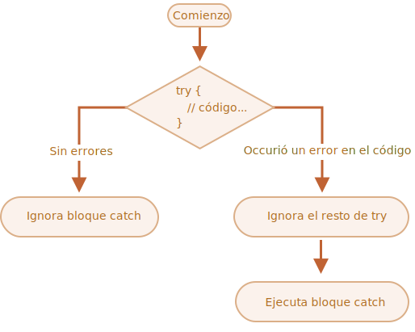

El tratamiento de las excepciones es un proceso muy importante en la creación de un programa. Es el mecanismo que nos permite controlar un proceso anómalo dentro de nuestro programa y gestionar qué ocurre cuando se produce un error.
Una excepción es un evento que se produce durante la ejecución de un programa que interrumpe el flujo normal de ejecución del código a causa de un error, ya sea controlado o inesperado.
Para poder gestionar los errores, en Java utilizamos lo que se llama un try-catch.
Un try-catch es un bloque de código que se añadirá a nuestro programa siempre que queramos controlar una parte del código que vayamos a desarrollar. El código se ejecutará en orden e irá siguiendo hasta que se produzca un error, en ese momento entrará al catch.
Podemos definir más de un catch en un mismo try. Cuando se produzca el error, entrará en el primer bloque catch que coincida con el tipo de excepción y solo podrá entrar en uno de los bloques catch.
Los tipos de excepción más específicos deben aparecer primero en la estructura, seguidos de los tipos de excepción más generales.
El try es lo que primero se ejecuta: se prueba la acción que se intenta realizar y, si se produce un error, el catch recoge la excepción y, según lo que indiquemos, lanza un mensaje con la descripción de lo que ha ocurrido. Al lanzar una excepción, el proceso normal del programa se interrumpirá.
Lo mejor para controlar los errores es tener en cuenta todas las posibilidades de error y controlarlas. Se debe utilizar un try-catch siempre que sea necesario.